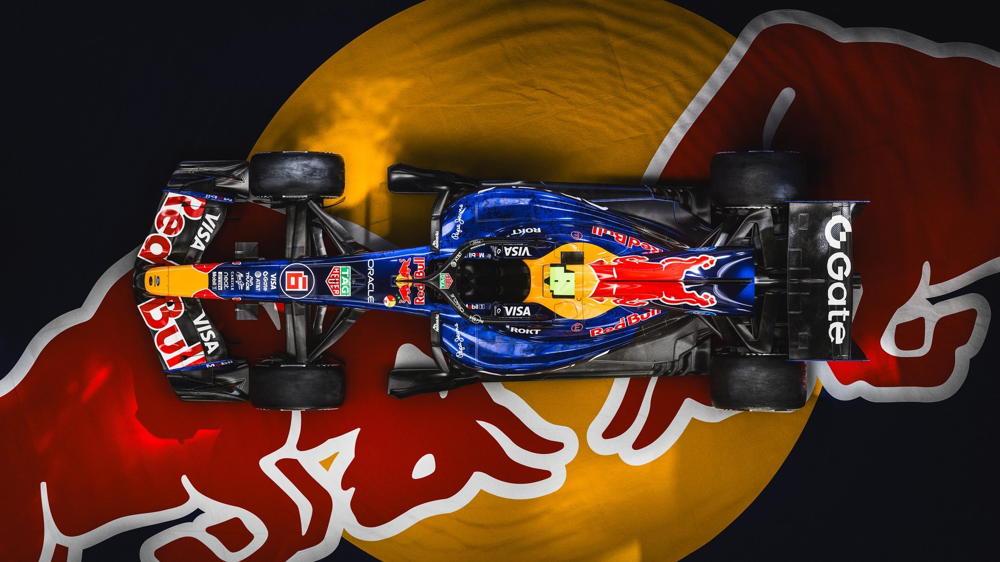
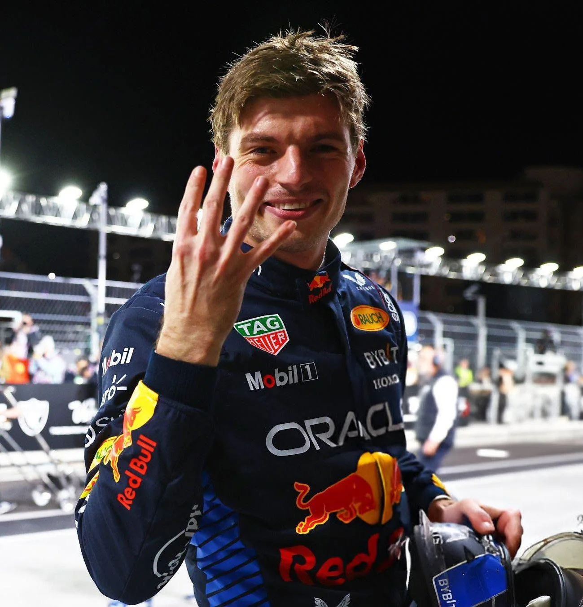

Csapat és Versenyzők (2026)
A 2026-os szezon egy új éra kezdete az Oracle Red Bull Racing számára. A csapatot immáron Laurent Mekies vezeti csapatfőnökként. A technikai gárda csúcsán a kaszniért felelős Pierre Waché, valamint a motorfejlesztést irányító Ben Hodgkinson állnak. A volán mögött a négyszeres világbajnok Max Verstappen (3) vezeti a csapatot, aki mellé a 2025-ös remek újoncéve után előléptetett fiatal francia tehetség, Isack Hadjar (6) csatlakozott.
Red Bull Ford Powertrains
Az alakulat történetében először építi házon belül az autót és a motort is: a Detroitban leleplezett RB22-t immáron a Red Bull Ford Powertrains DM01 erőforrás hajtja. A 2026-os szabályozásnak megfelelően az 1,6 literes V6-os turbómotor az MGU-H eltávolításával és az MGU-K teljesítményének megháromszorozásával közel 50–50%-os arányban osztja meg az erőt a belső égésű motor és az elektromos rendszer között. Az autó kizárólag 100%-ban fenntartható üzemanyaggal üzemel.


Aktív Aero az RB22-n
Az RB22 már nem rendelkezik hagyományos DRS-sel, az autó teljesen az új Aktív Aero rendszer köré épült. A Milton Keynes-i mérnökök úgy alkották meg az első és hátsó szárnyakat, hogy azok Straight Mode-ban zökkenőmentesen nyíljanak ki a légellenállás minimalizálása érdekében, míg Corner Mode-ban agresszív leszorítóerőt generáljanak. Az előzéseket egy extra elektromos energialöket, az Overtake Mode, valamint a pilóták által taktikusan beosztható Boost gomb biztosítja, ami teljesen új dimenziót ad Verstappen és Hadjar versenyzésének.